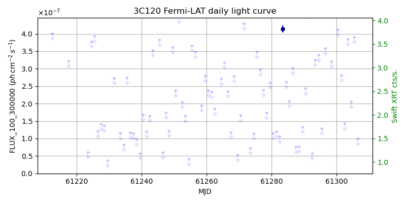
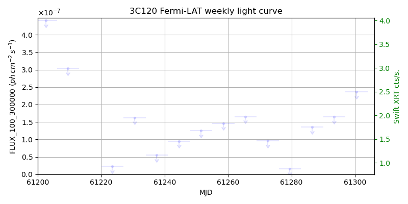
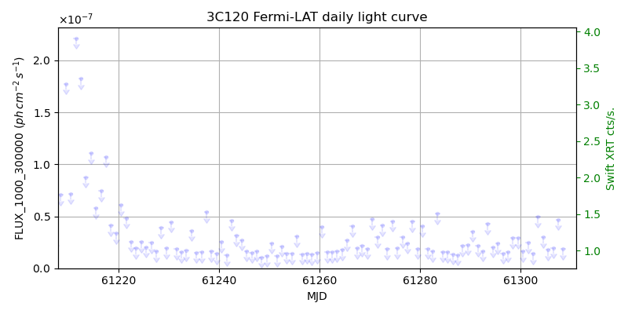
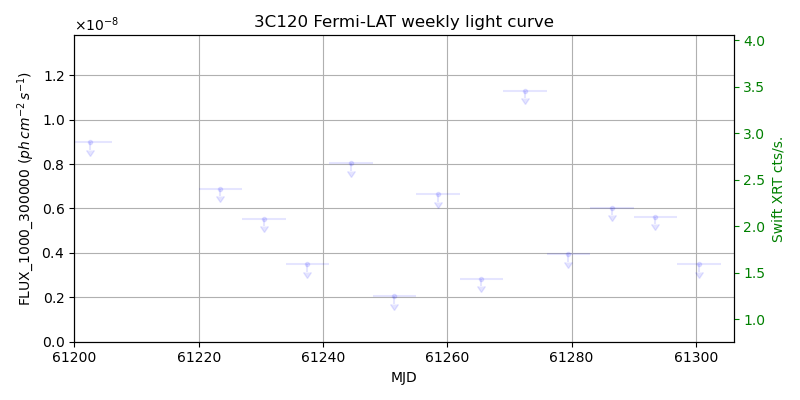

LAT Lightcurve site: https://fermi.gsfc.nasa.gov/ssc/data/access/lat/msl_lc/source/3C_120
Swift site: https://www.swift.psu.edu/monitoring/source.php?source=3C120
NED: Query
Time of last update of this page: UT: 2026-09-26 15:15 (MJD: 61309.635)
| Property | Value |
|---|---|
| R.A. | 4:33:11.04 |
| Dec. | 5:21:14.4 |
| z | 0.033 |
| 3FGL SpectrumType | |
| 3FGL PL Index | -1.00 |
| 3FGL Flux_100_300000 | -1.00e+00 |
| 3FGL Flux_1000_300000 | -1.00e+00 |
| 3FGL Flux >200 GeV | -1.00e+00 |
| 3FGL Extrap. Crab >200 GeV | -1.00 |
| 3FGL Flux After EBL Absorption >200GeV | -1.00e+00 |
| 3FGL EBL Crab Fraction >200GeV | -1.00 |

| MJD | dMJD | Flux | dFlux | Frac3FGL | FracCrab>200GeV | EBLFracCrab>200GeV |
|---|---|---|---|---|---|---|
| 61304.50 | 0.50 | 2.06e-07 | 0.00e+00 | 0.00 | 0.00 | -0.00 |
| 61305.50 | 0.50 | 3.91e-07 | 0.00e+00 | 0.00 | 0.00 | -0.00 |
| 61306.50 | 0.50 | 1.00e-07 | 0.00e+00 | 0.00 | 0.00 | -0.00 |
| 61307.50 | 0.50 | 5.31e-07 | 0.00e+00 | 0.00 | 0.00 | -0.00 |
| 61308.50 | 0.50 | 6.11e-07 | 0.00e+00 | 0.00 | 0.00 | -0.00 |

| MJD | dMJD | Flux | dFlux | Frac3FGL | FracCrab>200GeV | EBLFracCrab>200GeV |
|---|---|---|---|---|---|---|
| 61272.50 | 3.50 | 9.55e-08 | 0.00e+00 | 0.00 | 0.00 | -0.00 |
| 61279.50 | 3.50 | 1.62e-08 | 0.00e+00 | 0.00 | 0.00 | -0.00 |
| 61286.50 | 3.50 | 1.36e-07 | 0.00e+00 | 0.00 | 0.00 | -0.00 |
| 61293.50 | 3.50 | 1.65e-07 | 0.00e+00 | 0.00 | 0.00 | -0.00 |
| 61300.50 | 3.50 | 2.36e-07 | 0.00e+00 | 0.00 | 0.00 | -0.00 |

| MJD | dMJD | Flux | dFlux | Frac3FGL | FracCrab>200GeV | EBLFracCrab>200GeV |
|---|---|---|---|---|---|---|
| 61304.50 | 0.50 | 2.98e-08 | 0.00e+00 | 0.00 | 0.00 | -0.00 |
| 61305.50 | 0.50 | 1.78e-08 | 0.00e+00 | 0.00 | 0.00 | -0.00 |
| 61306.50 | 0.50 | 1.97e-08 | 0.00e+00 | 0.00 | 0.00 | -0.00 |
| 61307.50 | 0.50 | 4.69e-08 | 0.00e+00 | 0.00 | 0.00 | -0.00 |
| 61308.50 | 0.50 | 1.84e-08 | 0.00e+00 | 0.00 | 0.00 | -0.00 |

| MJD | dMJD | Flux | dFlux | Frac3FGL | FracCrab>200GeV | EBLFracCrab>200GeV |
|---|---|---|---|---|---|---|
| 61272.50 | 3.50 | 1.13e-08 | 0.00e+00 | 0.00 | 0.00 | -0.00 |
| 61279.50 | 3.50 | 3.95e-09 | 0.00e+00 | 0.00 | 0.00 | -0.00 |
| 61286.50 | 3.50 | 6.04e-09 | 0.00e+00 | 0.00 | 0.00 | -0.00 |
| 61293.50 | 3.50 | 5.63e-09 | 0.00e+00 | 0.00 | 0.00 | -0.00 |
| 61300.50 | 3.50 | 3.48e-09 | 0.00e+00 | 0.00 | 0.00 | -0.00 |
--------------------------------------------------------- Using user-supplied coords: 4:33:11.04 5:21:14.4 2000 --------------------------------------------------------- FLWO UT night of: 2026-09-27 Local Sid. @ Midnight: 00:00 Sunset (-15.0) (local, UT): 19:22 02:22 Sunrise (-15.0) (local, UT): 05:08 12:08 Moonrise (local, UT): Moonset (local, UT): Moon phase: 0.99 --------------------------------------------------------- AzTime LSID UT Obj_el Obj_az Mn_el Mn_az Sep. --------------------------------------------------------- 19:22 19:21 02:22 -35.7 54.6 14.0 91.3 60.5 19:52 19:51 02:52 -30.3 60.8 20.2 95.1 60.3 20:22 20:21 03:22 -24.5 66.2 26.4 99.2 60.1 20:52 20:51 03:52 -18.6 71.1 32.6 103.6 59.9 21:22 21:21 04:22 -12.4 75.6 38.7 108.5 59.7 21:52 21:51 04:52 -6.0 79.7 44.6 114.3 59.5 22:22 22:21 05:22 0.6 83.7 50.2 121.2 59.3 22:52 22:52 05:52 6.7 87.7 55.4 129.6 59.1 23:22 23:22 06:22 13.0 91.6 60.0 140.4 59.0 23:52 23:52 06:52 19.4 95.7 63.5 153.9 58.8 00:22 00:22 07:22 25.7 100.0 65.6 170.3 58.7 00:52 00:52 07:52 31.9 104.7 65.8 188.1 58.5 01:22 01:22 08:22 38.0 110.0 64.1 204.9 58.4 01:52 01:52 08:52 43.9 116.1 60.9 219.1 58.2 02:22 02:22 09:22 49.5 123.4 56.6 230.5 58.0 02:52 02:52 09:52 54.5 132.4 51.5 239.5 57.9 03:22 03:22 10:22 58.8 143.6 46.0 246.7 57.7 03:52 03:52 10:52 62.0 157.4 40.3 252.7 57.5 04:22 04:22 11:22 63.6 173.4 34.3 257.9 57.3 04:52 04:52 11:52 63.4 190.3 28.2 262.5 57.1 05:08 05:09 12:08 62.5 199.3 24.8 264.9 57.0 --------------------------------------------------------- Moon up all night, no dark time. Dark hours >55 deg.: 0.00